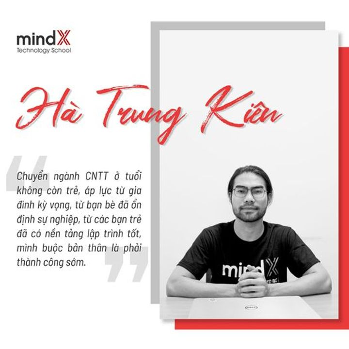

Chuyển ngành lập trình từ con số 0, không gì là không thể!
Diệu Hương
01/11/2021 | 483 lượt xem
Lập Trình Cho Người Mới Bắt Đầu, Định Hướng Ngành CNTT
26 tuổi thất nghiệp vì Covid và bước ngoặt chuyển ngành lập trình từ con số 0...
2020, thất nghiệp vì Covid và mất định hướng ở tuổi 26 là những gì mà anh Kiên - một học viên đặc biệt của MindX đã trải qua. Nhưng sau tất cả, đây chính là bước ngoặt lớn của cuộc đời, bỏ lại những kiến thức, kinh nghiệm đã tích lũy để bắt đầu theo đuổi công nghệ thông tin từ con số 0. Hãy cùng MindX lắng nghe những chia sẻ của anh Hà Trung Kiên ngay sau đây nhé:
1. Con đường đến với lập trình của anh như thế nào?
"Mình tên là Kiên, năm nay mình 27 tuổi, mình học ngành kỹ thuật công
trình ở Đại học xây dựng. Tuy nhiên, đến năm thứ 4 thì mình bỏ ngang vì
cảm thấy không phù hợp và chuyển qua dạy tiếng Anh, sau đó thì mình lại
chuyển qua dẫn tour du lịch. Đến đầu năm 2020, dịch Covid 19 bùng phát
thì mình chính thức thất nghiệp. Lúc đó, mình bắt đầu hoang mang, mất
định hướng và phải tìm con đường đi mới. Sau khi cân nhắc, mình thấy lập
trình viên là ngành có tiềm năng, ổn định và ít bị ảnh hưởng nhất nên
mình đã quyết định theo đuổi.

"Thật ra thì mình mới tốt nghiệp trường xây dựng cuối năm 2020 thôi. Khi
quyết định chuyển sang lập trình, mình cũng có tìm hiểu và được MindX tư
vấn rằng muốn sang nước ngoài thì phải có bằng đại học. Từ đó, mình mới
quay lại học tiếp để lấy bằng, chứ lúc đầu mình định bỏ luôn rồi "
2. Chuyển ngành ở độ tuổi không còn trẻ chắc anh cũng gặp không ít khó khăn? Động lực nào giúp anh nỗ lực và cố gắng để theo đuổi đến cùng?
"Mình cũng lo lắng và hoang mang khi bắt đầu vì nghĩ các bạn sinh viên đã học từ năm 18 tuổi, mình làm sao mà theo được. Tuy nhiên, học đến đâu thì mình cũng hiểu đến đó nên cũng có chút niềm tin là mình hợp với lập trình. Mình đầu tư rất nhiều thời gian để học lập trình, gần như là lúc nào cũng học luôn đó. Mình code đến 12 tiếng mỗi ngày, có đợt làm project mình ngủ chỉ 4 tiếng/ ngày, thời gian còn lại làm project hết.
Ngoài ra, mình nghĩ MindX cũng giúp mình tự tin hơn rất nhiều đấy. Vì có cam kết đầu ra nên mình cứ bám vào đó và học theo thôi, không phải lo lắng gì cả, nhưng mà chưa cần hết lộ trình, sau có 2 khóa học là mình có việc làm đầu tiên luôn rồi "
- Mất bao lâu thì anh tìm được công việc đầu tiên trong ngành này?
"Công việc đầu tiên tại Nexttech - đối tác của MindX, mình được offer
qua MindX Job Fair. Lúc đó mình mới kết thúc khóa 2, chưa xác định là đi
làm vì chưa có đủ kinh nghiệm và kiến thức, nhưng cũng may là hồi đó
tham gia sự kiện của MindX và phỏng vấn thử, cơ hội đến thì mình nắm bắt
thôi.
Sau một thời gian thì mình chuyển công ty, hiện tại mình đang làm tại
CMC Global với mức lương gấp đôi công ty cũ. Đây là thành tựu nho nhỏ mà
chính mình cũng không nghĩ sẽ đạt được nhanh đến như vậy."
- MindX có giúp anh chinh phục giấc mơ công nghệ dễ dàng hơn?
"Bây giờ thì không cần lo nhưng trước đó mình cũng thấy cảm ơn MindX, giảng viên thì nhiệt tình, cả 3 lớp đều rất nhiệt tình, support kể cả ngoài giờ học cũng tốt, trình độ chuyên môn giỏi. Bên cạnh đó, cộng đồng của MindX khá tốt, môi trường ổn, có nhiều sự kiện như MindX Job Fair và Hackathon cũng khá là hay, giúp mình có thêm nhiều cơ hội thử thách bản thân và tìm cơ hội hơn."
- Nếu được quay lại khi 18 tuổi, anh nghĩ mình sẽ có những quyết định gì

"Nếu được quay lại, mình sẽ học lập trình sớm hơn, từ cấp 3 luôn chứ không phải đại học. Cấp 3 thi đại học xong thì năm đầu tiên mình sẽ đi làm, đi thực tập luôn vì ngành CNTT đi thực tập, đi làm dễ lắm do mình đã chuẩn bị từ cấp 3 rồi mà. Sau khi tốt nghiệp đại học là mình đã có 4 năm kinh nghiệm, có thể bây giờ đã trở thành 1 Global Developer rồi. Tuy nhiên, đi đường vòng cũng không sao, thành công đến muộn chút nhưng cũng cho mình những trải nghiệm thú vị."
------------------------------------------------
Từ con số 0 tròn trĩnh, Kiên đã đạt được những quả ngọt đầu tiên, với sự
cố gắng vô cùng. MindX vẫn nhớ những ấn tượng đặc biệt khi gặp anh tại
buổi Hackathon, với vai trò 1 trong 3 ông chú - nhóm có thể coi là nhiều
tuổi nhất nhưng máu me cũng nhất nhì, cũng code xuyên đêm, đói ăn mì
tôm, chè cô Bân ở căng tin bán. Cuối buổi, anh cũng là 1 trong những
người duy nhất ở lại hỗ trợ team kê lại bàn ghế, dù mình biết thức đêm
như thế ai cũng mỏi lắm rồi.
Gặp lại ở hôm Job fair, vẫn mái tóc xuề xoà đó, Kiên chạy ra mượn bọn
mình laptop để demo cho các nhà tuyển dụng :)), chạy đôn đáo qua lại các
booth không bỏ lỡ bất kì cơ hội nào.
Bạn thấy đó cơ hội trong ngành này rất nhiều. Miễn có đủ quyết tâm, đủ
nỗ lực. MindX không tiện public mức thu nhập của bạn, tuy nhiên mình tin
đây cũng là 1 con số đáng kể mà nếu Kiên không liều 1 chút chuyển ngành
thì không dễ để đạt tới.
Và Kiên chỉ là 1 trong số vô vàn bạn đang học tập, cố gắng ở đây thôi!
Người ta làm được, sao bạn lại không nhỉ ? Tìm hiểu về các khóa học của
MindX tại đây
Đừng quên chia sẻ với bạn bè nhé!